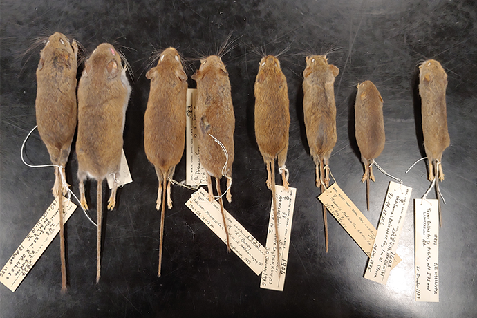

Teaching

Students studying PCR and Hardy-Weinberg

Know your rodents? Take mammalogy!

Art? Science? Take parasitology to understand our parasites
Courses Taught
Arkansas State University
- BIO 4352/5352 Mammalogy and BIO 4351/5351 Mammalogy Lab (Fall even)
- BIO 4382/5382 Parasitology and BIO 4392/5392 Parasitology Lab (Spring odd)
- ESCI 7121 Seminar: Ecology and Evolution of Parasites (Spring odd)
Missouri Southern State University
- Bio 101: General Biology and Lab
- Bio 110: Principles of Biology I and Lab
- Bio 305: Genetics and Lab
- Bio 361 Parasitology and Lab
- EH 371: Environmental Toxicology
Oklahoma State University
- Zool 1604L: Animal Biology Lab
- Zool 4104L: General Parasitology Lab
- Zool 1114L: Introductory Biology Lab
University of North Dakota
- Biol 333L: Population Biology Lab
- Biol 336L: Systematic Botany Lab
Teaching Awards
- Writing Excellence Award (2019): This is a university-level award, determined by The Writing Program Committee, to acknowledge excellent writing assignments used by instructors at Missouri Southern State University. I earned this award for my research-based assignment in BIOL 305 Genetics: “Empowering Students to Think and Write Like Biologists: A Multiweek, Inquiry-Based, Fruit Fly Writing Project“
Teaching Publications
- Bolek, MG, G Langford, and KD Gustafson. Parasites in Relation to Other Organisms: Hosts, reservoirs, and vectors. Chapter 5a in Concepts in Animal Parasitology. (Gardner SL and SA Gardner, eds.) Zea Books Open Access
- Bolek, MG, G Langford, and KD Gustafson. Parasites in Relation to Other Organisms: Life Cycles. Chapter 5b in Concepts in Animal Parasitology. (Gardner SL and SA Gardner, eds.) Zea Books Open Access